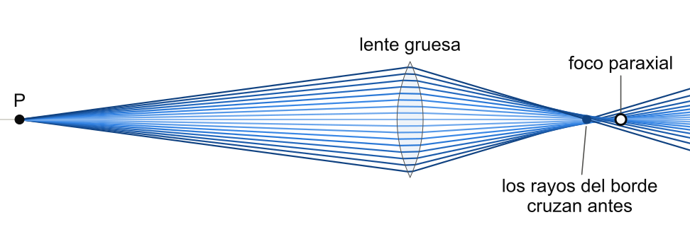
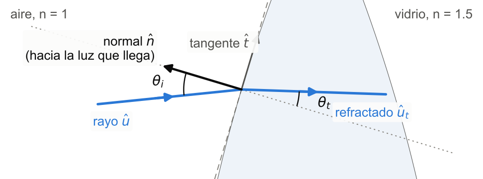
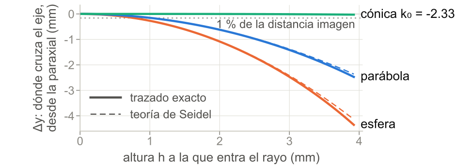
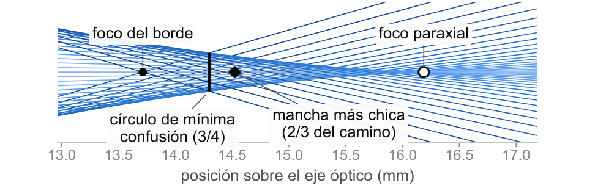
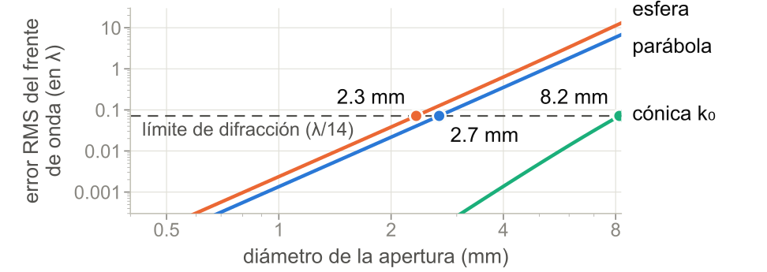

Formación de imágenes en lentes reales mediante el análisis vectorial de rayos
ATOCHE RODRIGUEZ, DIEGO GABRIEL · FARRO JURADO, ANGEL MANUEL · GUILLÉN RODRIGUEZ, FERNANDO ANDRÉ · QUISPE MONZÓN, OSWALDO ALEJANDRO
Universidad de Ingeniería y Tecnología - UTEC, Lima, Perú · Óptica & Ondas 2026-2 · Grupo 1
INTRODUCCIÓN
La ecuación de lente delgada, 1/s + 1/s′ = 1/f, supone una lente sin espesor y rayos cerca del eje. En una lente real cada rayo se refracta dos veces, en caras curvas, y no todos llegan al mismo punto.
Objetivo: seguir cada rayo con vectores a través de una lente gruesa y medir cuándo y por qué la imagen se aparta de la predicción paraxial.

METODOLOGÍA

- Rayo. L(λ) = P0 + λû, con û unitario.
- Impacto. El menor λ > 0 con L(λ) sobre la cara y = s(x): una cuadrática si la cara es cónica; si no, un método numérico.
- Normal. n̂ = (-s′, 1)/√(1 + s′²), con el signo que la hace mirar hacia la luz que llega: n̂·û < 0.
- Snell vectorial. ût = ηû + (η cos θi - cos θt) n̂, con η = n1/n2. Si cos θt no existe, hay reflexión total.
Imagen: el cruce de dos rayos emergentes.
¿Por qué vectores? La misma fórmula sirve para cualquier cara y cualquier dirección: no hay signos de ángulos ni casos por cuadrante, la reflexión total aparece sola y el método pasa igual a tres dimensiones.
RESULTADOS
Una lente real no tiene un solo foco: los rayos que pasan lejos del eje enfocan antes. Una cara asférica bien elegida reduce ese error 154 veces.
¿Cuándo vale la aproximación paraxial?

La diferencia crece como h² y llega al 1 % con rayos a 1 mm del eje, una décima del radio. El modelo delgado se equivoca 7.3 % por el espesor: con la focal efectiva y los planos principales, Gauss da la imagen exacta.
No hay un solo foco

La mancha más chica está a 2/3 del camino entre el foco paraxial y el del borde, y es 3 veces menor que en el foco paraxial.
¿Difracción o aberración? (λ = 550 nm)

La parábola está limitada por difracción hasta 2.7 mm de diámetro; la cónica que anula el tercer orden, k0 = -2.33, hasta 8.2 mm, y la mejor cónica, k = -2.345, casi toda la lente.
VALIDACIÓN
- Un cálculo a mano independiente da la misma imagen, hasta 10-16.
- La teoría de Seidel predice la aberración del trazado en 10 lentes, hasta 10-8.
- El camino óptico (Fermat) da el mismo tercer orden, hasta 10-6.
- 168 pruebas automáticas corren en cada cambio.
CONCLUSIONES
- La imagen depende de por dónde pasa el rayo: la diferencia con la paraxial crece como h² y ya es 1 % con h/R ≈ 0.1.
- Lo que rompe el modelo delgado es el espesor, no la ecuación de Gauss.
- El mejor foco no es el paraxial: la mancha más chica está a 2/3 del camino hacia el foco del borde y es 3 veces menor.
- Una cara asférica corrige la aberración, pero pide precisión: k a menos de 0.85 % del mejor valor. El espejo del Hubble se desvió 1.2 %.
Trabajo futuro
Rayos fuera del plano (3D), un vidrio real con dispersión, pérdidas de Fresnel y una prueba de Hartmann con láser para medir una lente de verdad.
Pruébalo en el celular
Mueve el objeto, cambia las caras y mira dónde se forma la imagen.
oswaldoaqm.github.io/
REFERENCIAS
- E. Hecht, Optics, 5.ª ed., Pearson, 2017.
- M. Born y E. Wolf, Principles of Optics, 7.ª ed., Cambridge University Press, 1999.
- W. T. Welford, Aberrations of Optical Systems, Adam Hilger, 1986.
- STScI, WFPC2 Instrument Handbook: constante cónica del espejo del Hubble.
Código, pruebas y datos: github.com/oswaldoaqm/Proyecto-Opticas. Gracias a los profesores Marco Cuyubamba y Eduardo Castillo.